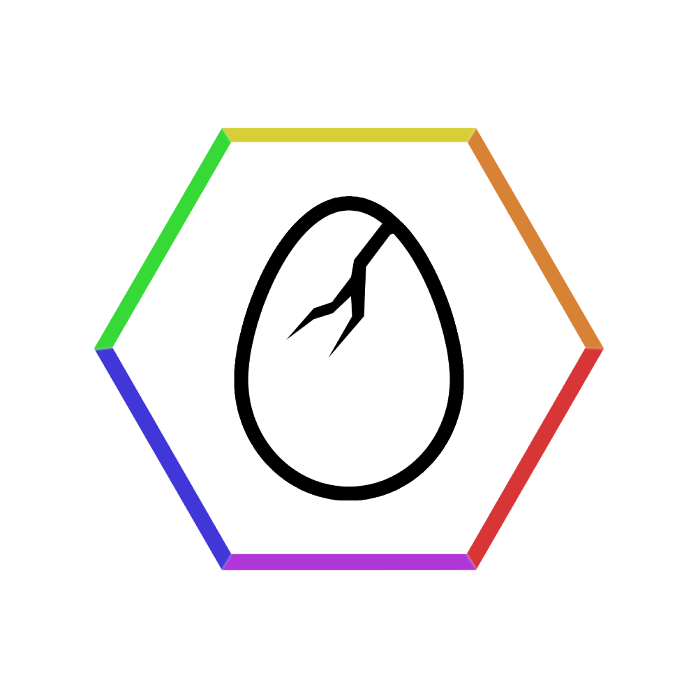

This page is still under construction.
In the meantime, you can still peruse what is currently available while additional content is populated here.
In the meantime, you can still peruse what is currently available while additional content is populated here.
 The NSS website, dubbed Sincera's Pandora is a simple static site hosted on Github Pages using a heavily modified "Hacker" theme for Jekyll. The main repository used to host the site content was public until 2021, and players were encouraged to freely investigate it to finish the first challenges. After the introduction of the Tier II challenges in early 2022, the main repository was made private to increase the difficulty of solving the new challenges and a permanent "spoilers" area was added to help players solve was was no longer easily visible.
The NSS website, dubbed Sincera's Pandora is a simple static site hosted on Github Pages using a heavily modified "Hacker" theme for Jekyll. The main repository used to host the site content was public until 2021, and players were encouraged to freely investigate it to finish the first challenges. After the introduction of the Tier II challenges in early 2022, the main repository was made private to increase the difficulty of solving the new challenges and a permanent "spoilers" area was added to help players solve was was no longer easily visible.
Shortly afer the NSS website was launched, a Discord server with a matching name was established and we began to fill it with resources and original content such as coursework, challenges, and functionality from partnership integrations. By solving the first challenge of Tier II, you would decipher an invite to bring you onto the server and grant you the @hopeful role, where you could use your newfound access to solve additional NSS CTF challenges and view hints or tips not available directly on the website. This invite was also encoded as a cryptogram and shared openly across several other platforms. In 2023, a script was provided to automatically decipher the invite, as explained on the cryptography page.
The main landing page of the NSS website was initially used to host the current, active challenge we were presenting, and a separate page called the Dinosaur Helpdesk System was the only place to find hints and tips before there was a dedicated "spoilers" area introduced. With the introduction of the Tier II challenges in 2022, the main page became its own entry challenge, where I combined several of the concepts and techniques detailed on the Helpdesk page to create a layered cryptogram that would serve as the entry challenge to the rest of the site while demonstrating the interconnected application of those techniques to produce something completely original, yet immensely familiar. This cryptogram became an instant fan favorite for its simple elegance and capacity to teach several complex cryptograhpic concepts at once. A key consideration was its similarity to techniques used in the Kryptos sculpture housed at the CIA headquarters in Langley, Virginia.*
*I have made several lasting contributions to the official Kryptos Wiki and spoken directly with Jim Sanborn about artistic interpretations regarding Kryptos and its intended messages.The ASE Bootcamp phase of NSS training was realized through a fully configured Microsoft Azure tenant complete with Sentinel and integrated with Crowdstrike Falcon and Cisco Umbrella for unmatched XDR capabilities, with vSphere Integrated Containers hosting Splunk in the on-prem side due to a lack of Azure ARC availability for vSphere until 2022. Other technologies included Security Onion Hybrid Hunter, Cisco Meraki MX, Sonicwall and Zyxel security appliances, and Ubiquiti Unifi managed through Docker containers on a Raspberry Pi HUD.
The on-prem side of this Azure integration was my home lab, dubbed The Gibson, which is visibly displayed on the Security Research page of this site. Due to the nature of this lab and its history of being leveraged for corporate or B2B uses including by government contractors, a complete configuration baseline cannot be shared publicly. For security reasons, the physical location of this system is now kept confidential.
All remaining partner integrations are handled through SSO and SaaS licenses and are now in perpetual standby as of September 2025.

Nearly all of the business partnerships that we established made use of some kind of SSO or SaaS integration with our Azure tenant, the NSS domain name, or The Gibson cyber range. Only a core set of them made use of all three simultaneously. Our Discord integrations were restricted only to other Discord servers or services due to security issues present in the Discord platform. Despite this, the Discord portion of NSS was essential to unlock additional roles and responsibilities.
The success of this roadmap is clearly visible in the proofs that are included as evidence in the badges awarded to Keyholders for both creating and solving NSS Capture-The-Flag events, and further demonstrated by a 100% student pass rate for AZ-900 and AZ-500 certification exams. The amount of work our students put into applying themselves in the coursework is carefully documented in Microsoft Azure logs, progress reports from enterprise partner platforms, and invoices signed and stamped by NSS that when combined with other sources of evidence are bound to a student record and reflect a total number of hours invested in completing the coursework, thus granting verifiable attestation of credit towards ISC2 CISSP certification through an official internship position as provided by a current CISSP alumni.
If you spot one of our Credly badges in the wild, be sure to check the "Evidence" area for an example of how serious and thorough we were about verifying and immortalizing the work of our students. Not every badge contained an Evidence area, but almost every student that earned a badge from NSS had more than one, meaning if you look around, you'll find a badge with a "Proofs.zip" file embedded within it.
The combination of the training and instruction, mock interviews and simulations, mentoring and career coaching, resources, and patforms made available to students was a clear message to the rest of the cybersecurity industry: if I can give it away for free, then so can you.
What I've built here will remain as an example of what you can do if you try. Be something. Stand for something real. Something good. The rest will just fall into place naturally.
Shane